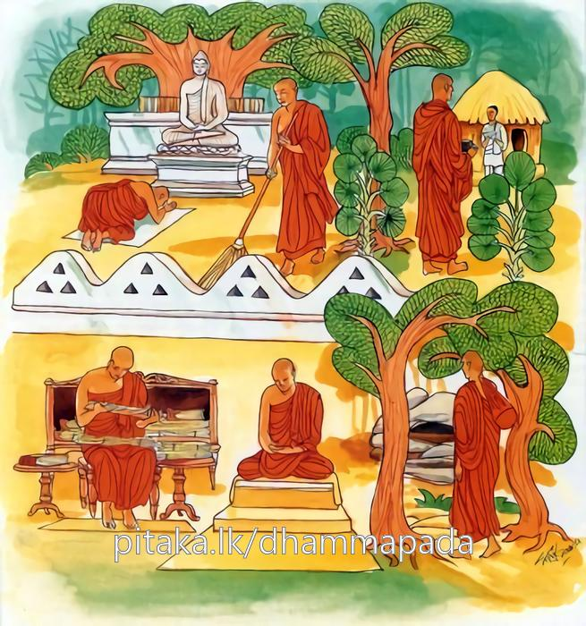

19-10 බුදුරජානන් කළ අවවාදයෙක්
මෙම කතාව ධම්මපද අටුවාවෙන් ද කියවන්න.
න සීලබ්බතමත්තෙන බාහුසච්චෙන වා පන
අථ වා සමාධිලාභෙන විවිච්ච සයනෙන වා.
සිවුපිරිසිදු සිල් පමණෙකින් හෝ තෙළෙස් ධුත ගුණ පමණෙකින් හෝ, නැවැත බහුශ්රැතභාව (ත්රිපිටකධර භාව) මාත්රයෙකින් හෝ නොහොත් සවිතර්කසවිචාරසමාධි අවිතර්කවිචාරමාත්රසමාධි අවිතර්කඅවිචාරසමාධි යන ත්රිවිධ සමාධි ලාභයෙන් (හෙවත් රූපාරූප අෂ්ටසමාපත්ති ලද පමණින්) හෝ විවික්තශය්යායෙන් (හෙවත් ගණසඞ්ගණිකායේන් වෙන් වැ කායවිවේකයෙන් යුක්ත ව විසීම් පමණෙකින්) හෝ (සුඛිත යෙමි යි නො සිතිය යුතු.)

ඵුසාමි නෙක්ඛම්මසුඛං අපුථුජ්ජනසෙවිතං
භික්ඛු විස්සාසමාපාදි අප්පත්තො ආසවක්ඛයං.
මහණ, පුහුදුනන් විසින් නො සෙවුනා ලද නෙක්ඛම්ම සුඛය (හෙවත් අනාගාමිඵල සුඛය) නාමකයින් ස්පර්ශ කෙරෙමි යි හෝ ආස්රවක්ෂයයට (රහත් පලයට) නොපැමිණි තෝ භවයෙහි විශ්වාසයට නො පැමිණෙව.
ශීලාදිගුණසම්පන්න භික්ෂූන් අතුරෙහි ඇතැම් කෙනෙකුන්හට “අපි පිරිපුන් සිල් ඇතියම්හ, අපි ධූතාඞ්ගධරයම්හ, අපි බහුශ්රැතයම්හ, අපි ප්රාන්තසෙනාසනයන්හි, ඇලුනම්හ, අපි ධ්යානාභිඥාලාභීම්හ, එහෙයින් අපට රහත්වනු අරුමයෙක් නො වේ, තමන් කැමැති දවසක රහත් වන්නට හැක්කෙමු”යි මෙසේ අදහස් උපන. “දැන් අපට රහත්වීම ඉතා ලඟ ය, ඒ අසිරි නො වේ”යි ඒ භික්ෂූන් අතර සිටි අනාගාමීන්ට සිත් විය. ඒ සියල්ලෝ එක් ව දවසක් බුදුරජුන් වෙත ගොස් වැඳ එකත් පසෙක හුන්නාහු “කිම, මහණෙනි! තමුසේලාගේ පැවිදිකිස මුදුන් පැමිණියේ දැ?”යි උන්වහන්සේ අසා වදාළ කල්හි “ස්වාමීනි! අපි මෙබඳු මෙබඳු තරම් ඇතියම්හ, අපි කැමැති මොහොතෙක රහත් වන්නට සමර්ත්ථයම්හ”යි කීහ. ඉක්බිති බුදුරජානන් වහන්සේ ඔවුන්ගේ බස් අසා “මහණෙනි! මහණහු විසින් සිල් පිරීම් ඈ පමණකින් හෝ අනගැමිසුව ලැබීම් පමණකින් හෝ සසරදුක ටිකැයි සලකන්නට නො වටී, ආස්රවක්ෂයට නො පැමිණ සුවපත්මි යි ද නො සිතිය යුතු ය”යි වදාරා මේ ධර්මදේශනාව කළ සේක.
න සීලබ්බතමත්තෙන බාහුසච්චෙන වා පන,
අථ වා සමාධිලාභෙන විවිත්තසයනෙන වා.
.
ඵුසාමි නෙක්ඛම්මසුඛං අපුථුජ්ජනසෙවිතං,
භිකඛු විස්සාසමාපාදි අප්පත්තො ආසවක්ඛයන්ති.
මහණ! ශීලයෙන් හා ව්රතයෙන් යුත් පමණින් හෝ නැවැත බහුශ්රැතභාවයෙන් හෝ නොහොත් සමාධිලාභයෙන් හෝ කායවිවේකයෙන් යුක්ත ව විසීමෙන් හෝ පුහුදුන් විසින් නො සෙවුනා ලද අනාගාමිඵලසැපය පහස්නෙමි යි හෝ රහත්පලයට නො පැමිණි (තෝ) භවයෙහි විශ්වාසයට නො පැමිණෙව.
න සීලබ්බතමත්තෙන = සිවු පිරිසිදු සිල් පමණින් හෝ කෙලෙස් ධුතගුණ පමණින් හෝ. [1]
බාහුසච්චෙන වා පන = නැවැත ත්රිපිටකධර්මය උගත් පමණින් හෝ. [2]
අථ වා සමාධිලාභෙන = නොහොත් රූපාරූප අෂ්ටසමාපත්ති ලද පමණින් හෝ. [3]
ප්රථම - ද්විතීය - තෘතිය - චතුර්ත්ථද්ධ්යාන යන රූපසමාපත්ති සතර හා ආකාසානඤ්චායතන - විඤ්ඤාණඤ්චායතන - ආකිඤ්චඤ්ඤායතන - නෙවසඤ්ඤානාසඤ්ඤායතන යන රූපසමාපත්ති සතර රූපාරූප අෂ්ටසමාපත්තීහු ය.
විවිත්තසයනෙන වා = කායවිවේකයෙන් යුක්තව විසීමෙන් හෝ. [4]
ඵුසාමි නෙක්ඛම්මසුඛං = අනාගාමිඵලසැපය පහස්නෙමි. [5]
අපුථුජ්ජනසෙවිතං = පුහුදුන් විසින් නො සෙවුනා ලද. [6]
භික්ඛු = මහණ.
විස්සාසං = භවයෙහි විශ්වාසයට. [7]
මා ආපාදි = නොපැමිණෙව.
අප්පෙත්තො ආසවක්ඛයං = රහත්පලයට නො පැමිණියා වූ (තෝ) [8]
මහණ! රහත්පලයට නො පත් තෝ, සීලයෙන් හා තෙළෙස් දුහඟින් යුත් පමණින්, තුන් පිටකය උගත් පමණින්, පිරිස් මැද විසීමෙන් වෙන්වීම් පමණින් සාමාන්ය කෙලෙස් සහිත මිනිසුන් නො සෙවුනු අනාගාමි ඵලසුඛය චිත්තබලයෙන් පහස්නෙමි යන මෙපමණින් භවයෙහි විශ්වාසයට නො පැමිණෙව යන අරුත්.
අනාගාමීඵලයට පැමිණි එහෙත් රහත්පලයට නො පැමිණි මහණහු ශීලසමාධ්යාදිගුණයෙහි පිරිපුන් ව සිටියහු ද මට ඉතිරි ව ඇති භවය ස්වල්ප ය, භවය ස්වල්ප ව ගියේ ය’යි භවයෙහි විශ්වාසය නො තැබිය යුතු ය. යම්සේ ස්වල්පමාත්ර වූ ද ගූථය දුර්ගන්ධ වේ ද එහෙන් ස්වල්පමාත්ර වූ ද භවය දුක් වේ, යනු භාවයි.
ධර්මදේශනාවගේ අවසානයෙහි ඒ භික්ෂූහු රහත්බවෙහි පිහිටා ගත්හ. ධර්මදේශනා තොමෝ පැමිණ සිටි පිරිසට ද වැඩ සහිත වූය.
භික්ෂුවස්තුව නිමි.